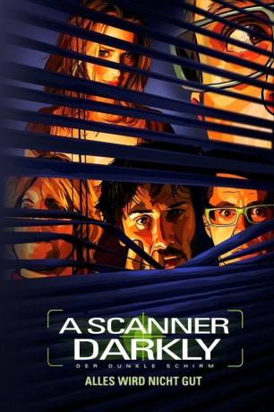

#5023 A Scanner Darkly - Der dunkle Schirm
Alternativ: A Scanner Darkly
 
 IMDB-Wertung: 7.1 / 10
IMDB-Wertung: 7.1 / 10  Metascore: 0
Metascore: 0 
Die Vereinigten Staaten sind in naher Zukunft ein Überwachungsstaat, in dem versucht wird, die massiven, durch Drogenkonsum und -abhängigkeit hervorgerufenen Probleme einzudämmen. Einzig die Organisation „Der neue Pfad“, die geschlossene Entziehungskuren für Drogenabhängige anbietet, kann sich durch besondere Verträge mit der Regierung der Überwachung entziehen. Bob Arctor ermittelt verdeckt als Agent Fred in einem Fall um die Droge „Substanz T“, wobei das Kürzel „T“ für den Tod steht, und ist während seiner Ermittlungsarbeiten selbst zum Konsumenten dieser Droge geworden. Seine Anonymität wird durch einen so genannten „Jedermann-Anzug“ gewahrt, der ständig das Äußere des Trägers ändert und seine Stimme manipuliert, so dass er unidentifizierbar wird.
Jahr: 2006
Dauer: 100 Minuten
FSK: 16
Land: USA Studio: WIPTonspuren: DD5.1 - ,
Untertitel: Deutsch, Englisch, , Französisch,
Auflösung: 1080p (1920x1080) Größe: 7045 MB
Genre: Thriller, Drama, Sci-Fi, Animation/Trick, Mystery
Regisseur:  Richard Linklater
Richard Linklater
Drehbuch: John O'Brien
Soundtrack:
Darsteller:
 Rory Cochrane als Charles Freck
Rory Cochrane als Charles Freck Robert Downey Jr. als James Barris
Robert Downey Jr. als James Barris- Mitch Baker als Brown Bear Lodge Host
 Keanu Reeves als Bob Arctor
Keanu Reeves als Bob Arctor Steven Chester Prince als Cop
Steven Chester Prince als Cop Winona Ryder als Donna Hawthorne
Winona Ryder als Donna Hawthorne Woody Harrelson als Ernie Luckman
Woody Harrelson als Ernie Luckman- Chamblee Ferguson als Medical Deputy #2
- Angela Rawna als Medical Deputy #1
- Eliza Stevens als Arctor's Daughter #1
- Melody Chase als Arctor's Wife
- Turk Pipkin als Creature
- Alex Jones als Street Prophet
- Wilbur Penn als Medical Officer #1
 Hugo Perez als New Path Staff Member #1
Hugo Perez als New Path Staff Member #1 Dameon Clarke als Mike
Dameon Clarke als Mike Jason Douglas als New Path Farm Manager
Jason Douglas als New Path Farm Manager- Marco Perella als Donald
- Joe Basquez als Undercover Cop , uncredited
- Jack Cruz als Police Officer , uncredited
 Gary Teague als Brown Bear Lodge Member , uncredited
Gary Teague als Brown Bear Lodge Member , uncredited- Sean Allen als Additional Fred Scramble Suit Voice
- Cliff Haby als Voice from Headquarters
- Natasha Valdez als Waitress
- Mark Turner als Additional Hank Scramble Suit Voice
- Sarah Menchaca als Arctor's Daughter #2
- Leif Anders als Freck Suicide Narrator
- Lisa Marie Newmyer als Connie
- Ken Webster als Medical Officer #2
- Rommel Sulit als New Path Staff Member #2
- Christopher Ryan als New Path Resident #1
- Leila Plummer als New Path Resident #2
- Jonathan Cacy als Brown Bear Lodge Member , uncredited
Datei: X:\HD-Trick\Scanner Darkly - Der dunkle Schirm, A (2006, FSK16, 1920x1080).mkv seit 19.12.2016
Festplatte: Kinder-Filme+Trick
 Es gibt insgesamt 28 Filme in der Gruppe 'HD-Trick'
Es gibt insgesamt 28 Filme in der Gruppe 'HD-Trick'